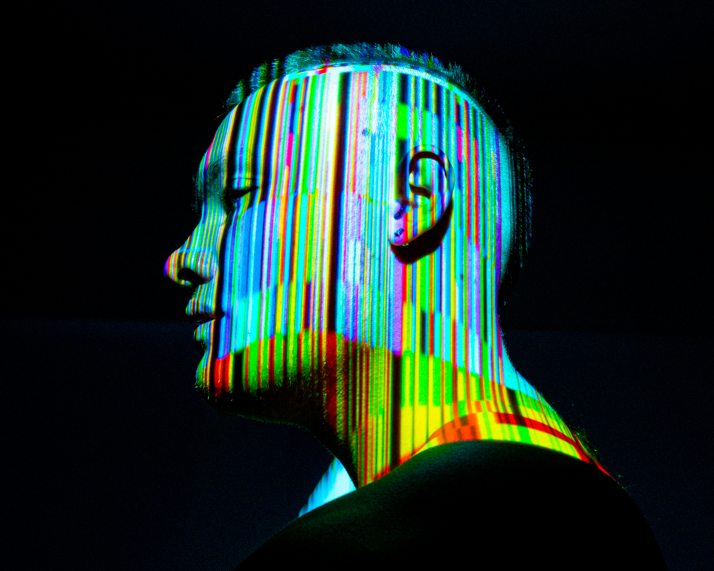

I grew up in South East Asia. Moved there when I was eight-years-old. Lived in a few different countries. Graduated highschool in Kuala Lumpur, Malaysia. The arts have always been a passion of mine but I was never a good drawer. This ineptitude led me down the path of embracing photography as my creative outlet of choice. Eventually, I learned the benefits of using various post-production programs to edit my images. I believe this is one of the primary reasons why I decided that I need to study IT. The fact that IT is like an omnipresent force in our daily lives fascinates me. My desire to capture intriguing imagery has sparked a desire to not just observe and appreciate the results of the technology I use but to also understand it.
Name: Liam Folie
Student ID: S3605725
Student Email: s3605725@student.rmit.edu.au
Nationality: Australian
Education:
With all of that in mind, my hobbies include photography (obviously) and studying mandarin, and judo. I would define my photography style as leaning more on the experimental side of things. Bold saturated colours are what I am inspired by. My goal is to create imagery that you wouldn’t see in everyday life. You can check out my work on instagram here.
I’ve been learning Mandarin off and on for the past 6 years. Since growing up in SEA I was always encouraged to study this language because China has a huge reach throughout that part of the world, and because of the obvious global influence that country has on China. The language and culture also intrigues me beyond the conventional reason for learning the language too. The writing system is fascinating and there is a lot of cultural and historic meaning to each Chinese character.
To fulfill my goals for technological domination of the human race, why else? To clarify that is a joke. I love technology and want to understand an utilise it in a professional setting to become more than just the “user”. I hope to gain valuable skills that will increase my prospects of employability in a highly competitive job market.
>>> Home?